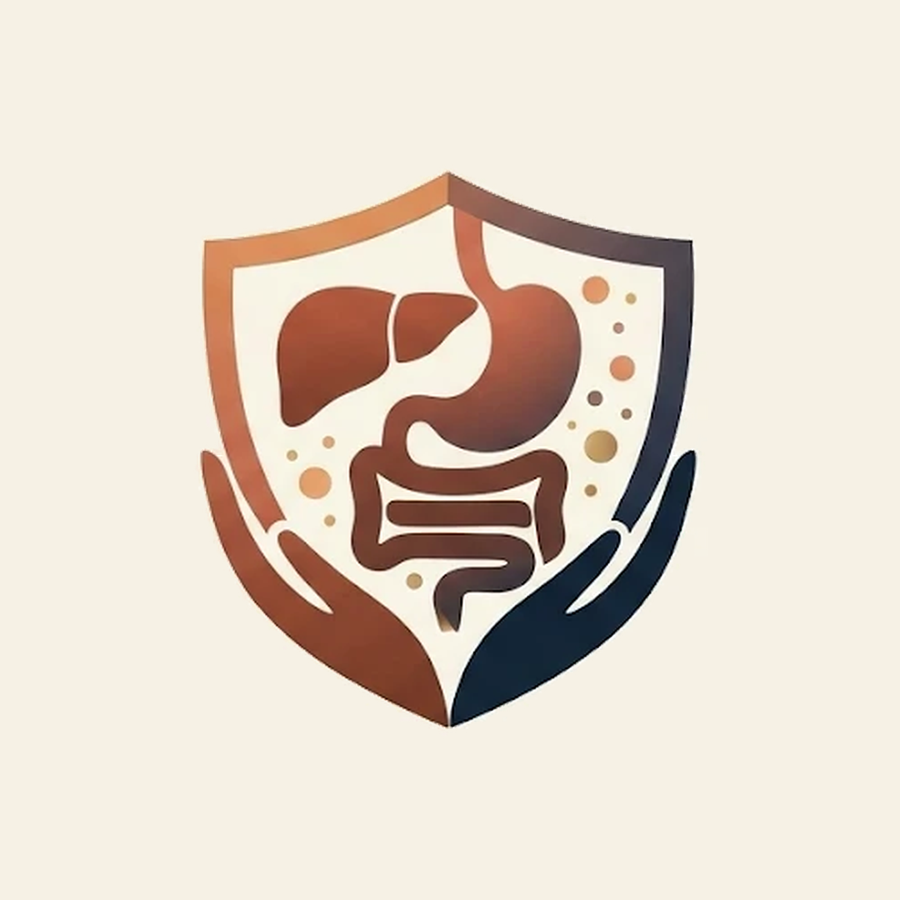
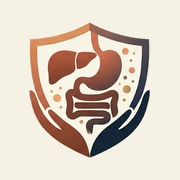

Logo and brand guide
The logo shows the organs he treats (the liver, the stomach and the intestines) inside a shield, held by two caring hands. Use the files in this kit as they are: the design is final.
The logo shows the organs he treats (the liver, the stomach and the intestines) inside a shield, held by two caring hands. Use the files in this kit as they are: the design is final.
The logo on white. logo-transparent.png
The logo on its own cream. logo-on-cream.png
The shield alone. mark-transparent.png

Profile picture for WhatsApp, Instagram, Google. profile-picture-1080.png

App and phone home-screen icon. icons/
On navy or a dark photo: always on a cream panel, never directly.
Navy
HEX #121F2B, RGB 18 31 43
CMYK 58 28 0 83 (approx.)
The name, the right hand, body text
Copper
HEX #DB8E5D, RGB 219 142 93
CMYK 0 35 58 14 (approx.)
The top of the shield, highlights
Brown
HEX #81432F, RGB 129 67 47
CMYK 0 48 64 49 (approx.)
The organs and the left hand
Terracotta
HEX #B9714F, RGB 185 113 79
CMYK 0 39 57 27 (approx.)
The tagline, The Gut Doctor
Cream
HEX #F6F1E5, RGB 246 241 229
CMYK 0 2 7 4 (approx.)
Background and the inside of the shield
Newsreader
Newsreader Italic
Instrument Sans
The logo's lettering is part of the logo image. For other text near it (letters, cards, the website), use Newsreader for names and headings, its italic for the tagline, and Instrument Sans for everything else. Both are free Google fonts.
Keep space around the logo at least as wide as one hand in the logo. Nothing else should sit inside the dashed line.